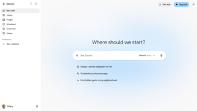
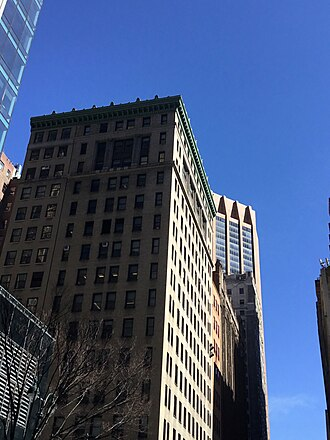
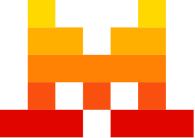
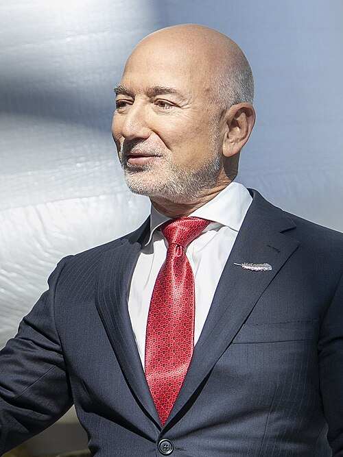

L’ecosistema · nov 2026
Chi fa cosa
Crea contenuti

Veo 3.1 · Google Flowvideo Runway Gen-4.5video cinema
Runway Gen-4.5video cinema Kling 4.0video (Cina)
Kling 4.0video (Cina) Higgsfieldvideo ads
Higgsfieldvideo ads
ElevenLabs v4voceSuno v6musica
Nano Banana 2immagini (Google)
 Midjourneyimmagini
MidjourneyimmaginiCostruisce prodotti
ChatGPT · GPT-6.2 Astrachat & agenti
 Claude · Fable 5.2codice & documenti
Claude · Fable 5.2codice & documentiGemini 4multimodale
Grok · xAIchat

Le Chat · Mistral 🇪🇺AI europeaPerplexityricerca
 Copilot · Claude Codeprogrammazione
Copilot · Claude Codeprogrammazione Python + PyTorch · Colab · HFmachine learning
Python + PyTorch · Colab · HFmachine learningLe persone
Chi c’è dietro?
👆 clicca sulla slide per rivelare nomi e aziende 🇺🇸
🇺🇸Elon Musk
xAI · X · Tesla
Grok, robotaxi, chip
🇺🇸
Jensen Huang
NVIDIA
i chip che fanno girare l’AI (~80% del mercato)
🇺🇸
Sam Altman
OpenAI
GPT-6.2 Astra · Sora (chiuso 2026)
 🇺🇸
🇺🇸Dario Amodei
Anthropic
Claude Fable 5.2 · Mythos
🇬🇧
Demis Hassabis
Google DeepMind
Gemini · Veo 3.1 · Nobel ’24
🇺🇸🇮🇳
Sundar Pichai
Google
Gemini dentro Android & Search

🇺🇸Jeff Bezos
Amazon · AWS
il cloud su cui gira gran parte dell’AI
 🇺🇸
🇺🇸Mark Zuckerberg
Meta
Llama open-source
🇫🇷
Arthur Mensch
Mistral AI
l’AI europea (Parigi)
🇺🇸
Lisa Su
AMD
la rivale di NVIDIA sui chip (MI300/MI450)